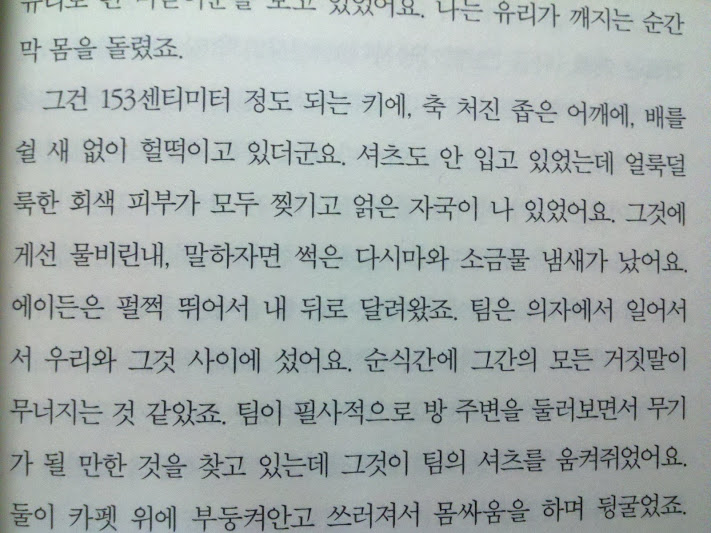
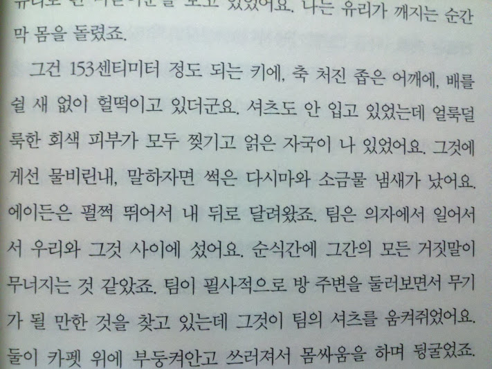

자세함과 정확함
3/17/2012
유년 시절 집에서 구독하던 신문에는 지치지도 않게 계속 반복되는 레파토리가 있었다. 나중에는 첫 문장만 봐도 이런 저런 전개를 거쳐 이렇게 끝나겠구나 하는 감이 올 정도였다.
그건 언제나 적당한 사회적 지위를 가진 화자가 본인의 (아스라이 그리운) 유학 시절 겪은 일화를 통해 이야기는 시작된다. 후진적인 국가에서 성장한 필자는 몸에 밴 습관 대로 저도 모르게 후진적인 행동을 하게 되었는데 그런 행동은 선진국에서는 너무나 당연하지 않은 - 그래서 왜 그런지 이유 조차 묻는 것이 이상한 일이었고 그래서 더욱 부끄러웠다 라는 패턴으로 흘러갔다.
별의 별 선진 적인 사례가 다 나왔던 것으로 기억하는데 그 중 하나가 수치를 정확하게 표현한다 는 것이었다.
선진 국민들은 다섯 개면 다섯, 여섯이면 여섯 으로 정확 하고 합리? 적으로 서술하는대 반해 이놈의 미개인들은 대~충 서너 살, 대 여섯 개 등으로 물에 물탄 듯 두리뭉술하게 넘어간다. 따라서 이런 대충 대충 이 바로 우리가 덜 선진 하다는 증거다 란 주장이었다.
A couple of, several 등의 말이 없거나 쓰이지 않는 것도 아니고, 딱 봐서 다섯 개인지 여섯 개인지 확실하지 않으면 대 여섯개 라고 말 해야지 둘 중 하나로 임의로 결정한다고 해서 그게 합리적이라는 가정은 말이 되지 않는다.
다시 말해 자세 히 말한다고 해서 더 정확 하다고 판단하는 것 자체가 사람이 빠지기 쉬운 오류이다.
그건 언제나 적당한 사회적 지위를 가진 화자가 본인의 (아스라이 그리운) 유학 시절 겪은 일화를 통해 이야기는 시작된다. 후진적인 국가에서 성장한 필자는 몸에 밴 습관 대로 저도 모르게 후진적인 행동을 하게 되었는데 그런 행동은 선진국에서는 너무나 당연하지 않은 - 그래서 왜 그런지 이유 조차 묻는 것이 이상한 일이었고 그래서 더욱 부끄러웠다 라는 패턴으로 흘러갔다.
별의 별 선진 적인 사례가 다 나왔던 것으로 기억하는데 그 중 하나가 수치를 정확하게 표현한다 는 것이었다.
선진 국민들은 다섯 개면 다섯, 여섯이면 여섯 으로 정확 하고 합리? 적으로 서술하는대 반해 이놈의 미개인들은 대~충 서너 살, 대 여섯 개 등으로 물에 물탄 듯 두리뭉술하게 넘어간다. 따라서 이런 대충 대충 이 바로 우리가 덜 선진 하다는 증거다 란 주장이었다.
A couple of, several 등의 말이 없거나 쓰이지 않는 것도 아니고, 딱 봐서 다섯 개인지 여섯 개인지 확실하지 않으면 대 여섯개 라고 말 해야지 둘 중 하나로 임의로 결정한다고 해서 그게 합리적이라는 가정은 말이 되지 않는다.
다시 말해 자세 히 말한다고 해서 더 정확 하다고 판단하는 것 자체가 사람이 빠지기 쉬운 오류이다.
키가 153cm 정도 라는 표현을 보고 이거 분명히 원문에는 몇 피트 몇 인치 라고 했을 텐데 도량형을 바꾸다 보니 지나치게 자세한 - 그래서 정확한 것 처럼 오인하게 되는 구절을 보니 갑자기 옛 생각이 나서 끄적거려 보았다.

